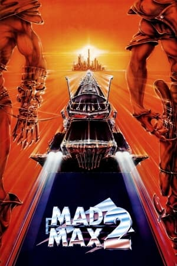
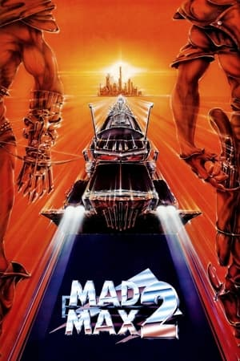

Bienvenue sur FLC flix 2 Ans
Un site de FloLeCrafteur
Version 3.20.0
FLC Flix fête aujourd'hui ses 2 Ans d'existence! Et oui, il y a de cela 2 ans tout pile, FLC Flix sorta
avec sa toute première version : FLC Flix V0
Pour l'occasion, un thème est sorti, le thème alpha, transformant FLC Flix V3.20 en FLC Flix V0.0! Les thèmes Bêta
et Pre-Release seront eux disponibles le 1er Juillet, lors de la sortie de FLC Flix V4.
Pour l'occasion, un petit site à été créer pour traverser ces deux années d'existence, et donc pour (re)découvrir
les débuts du site.
Je vous souhaites une bonne visite et (peut-être) une bonne (re)découverte des premières version!
Un site de FloLeCrafteur
Version 3.20.0


 


Civil War | Film d'Action
The Fall Guy | Film d'Action
Mad Max [1, 2, Fury Road] | Films d'Action

American Horror Story | Saison 12
Doctor Who | Saison 6
Les Simpson | Saison 5
South Park | Saison 2
The Cuphead Show | Saison 2
Grey's Anatomy | Saison 2